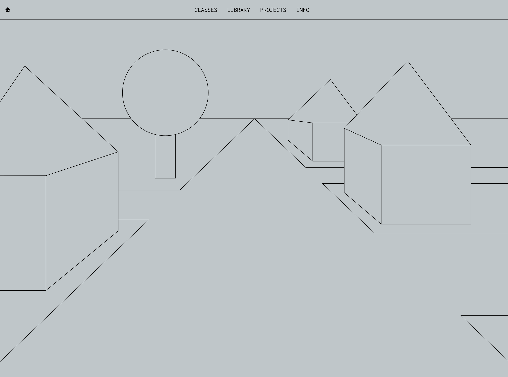

From here you can:
Week 1: Make a Space
This week your task is to create a simple webpage and get it online. Create a digital space for you and your peers to inhabit. Whatever symbolic space you want it to be is up to you: It can be an art gallery, a library, a park, a high rise, a night club, a water tower, a studio, you name it.


Class 1: HTML/CSS Fundamentals
In this class, we’ll introduce fundamental tools and code basics for creating websites.
In Class: introduce tools/materials, create a simple webpage, add some text, an image, introduce CSS, add an external stylesheet, introduce assignment 1.
This week you will put some “things” in your space. Using just HTML and CSS, draw three items that would go into your space. They can be linked as separate pages or integrated into your main page. Consider how these things are related both conceptually AND formally.
Class 2: CSS Fundamentals/Getting Your Site Online
In this class, we’ll expand on CSS fundamentals and introduce the tools for getting website online. We’ll also discuss plans for students’ online spaces.
In class: walkthrough github/github pages. View students’ online spaces. If there’s time: introduce positioning and CSS shapes. Troubleshooting.
Examples:
- art.teleportacia.org
- https://moutakusanda.com/
- http://embassyofinternet.org/
- https://garden-for-the-book.are.na/
Resources:
- https://www.sublimetext.com/
- https://www.google.com/intl/en_ca/chrome/
- https://github.com/join
- https://desktop.github.com/
- https://codepanel.in/
- https://developers.google.com/web/tools/chrome-devtools
HTML/CSS Basics:
- https://www.youtube.com/watch?v=CkzbI1Tv_rQ
- https://www.internetingishard.com/html-and-css/
- https://www.w3schools.com/
- https://youtu.be/aHUtMbJw8iA
LinkedIn Learning HTML Essential Training:
https://www.linkedin.com/learning/html-essential-training-4/the-syntax-of-html-elements?u=2209922
Github Related (Managing and posting your site):
https://www.youtube.com/watch?v=77W2JSL7-r8
https://www.youtube.com/watch?v=BCQHnlnPusY&t=0&ab_channel=TheCodingTrain
https://guides.github.com/features/pages/